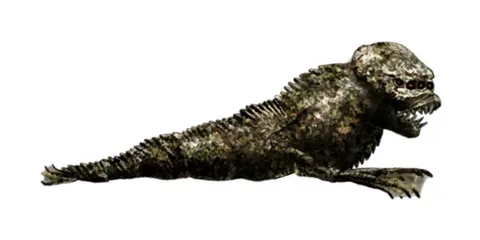
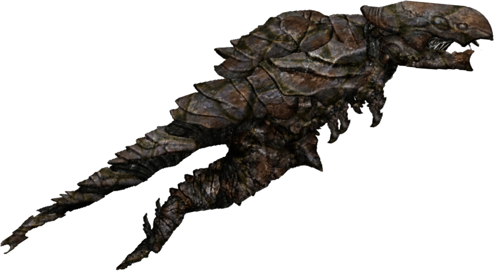
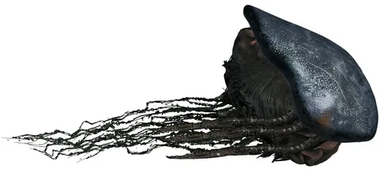
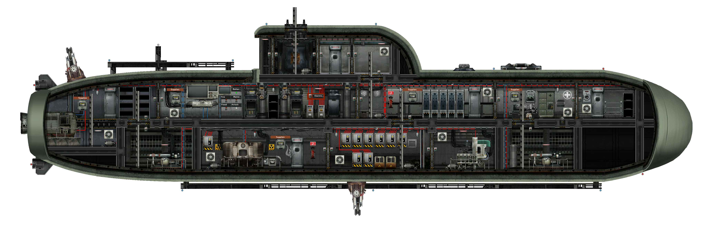
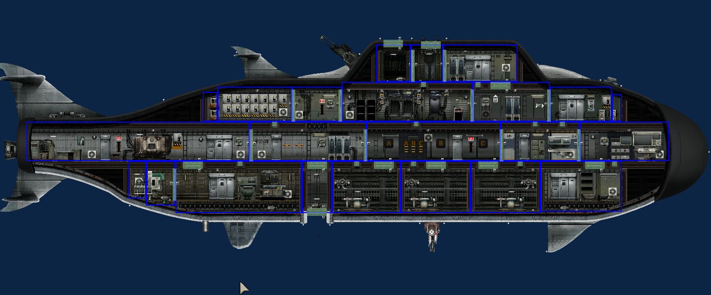
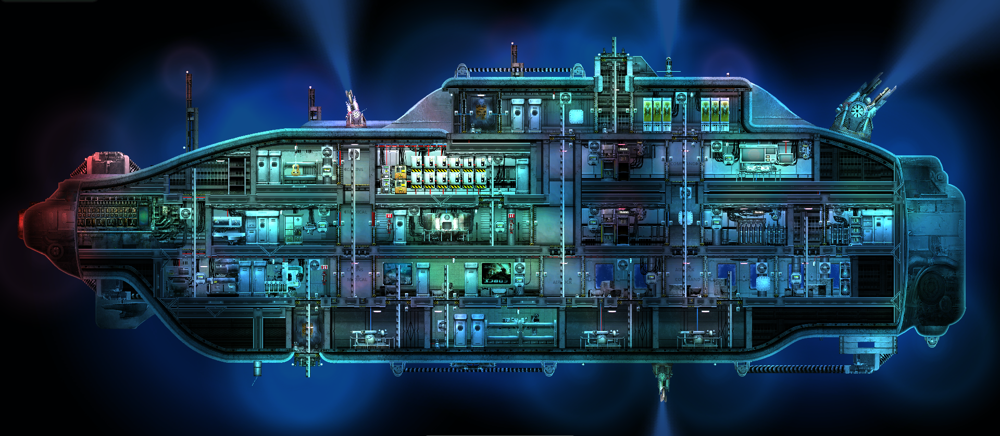

Ползун
Небольшой, но крайне агрессивный хищник. Атакует группами, реагирует на шум и свет.
- Опасность: низкая
- Поведение: стайное
- Уязвимость: огонь, электрошок
Изучите обитателей и технику, чтобы ваш экипаж вернулся живым.
Начать изучениеВ глубинах Европы выживают лишь те, кто знает своих врагов.

Небольшой, но крайне агрессивный хищник. Атакует группами, реагирует на шум и свет.

Бронированный хищник с острым клювом. Прорывает обшивку, опасен в группах.

Гигантский медлительный левиафан. Разрушает подлодки одним ударом.
Выбор субмарины определяет стиль игры. От разведчиков до тяжёлых носителей.

РазведчикКомпактная и быстрая лодка для разведки. Идеальна для малых экипажей.

ПопулярнаяУниверсальная субмарина. Баланс между скоростью, бронёй и грузовместимостью.

НосительТяжёлая военная субмарина с мощным вооружением. Медленная, но хорошо защищённая.
В Barotrauma каждый член экипажа критически важен. Успешная миссия зависит от слаженной работы специалистов.
Управляет субмариной, принимает решения о маршруте и торговле, следит за корпусом.
Отвечает за корпус и реактор. Сваривает пробоины и регулирует подачу топлива.
Ремонтирует двигатели, электрику и орудия. Контролирует балласт и насосы.
Спасает жизни. Делает уколы, применяет дефибриллятор и следит за радиацией.
Защищает лодку от монстров и предателей. Управляет тяжелым вооружением.
Репутация определяет всё. Выберите сторону или балансируйте между ними, чтобы получить доступ к уникальным товарам и миссиям.
Проправительственная структура. Поддерживает порядок, закон и стабильность на outpost.
Борцы за свободу колоний. Предпочитают чёрный рынок, саботаж и партизанскую тактику.
Нейтрально-хаотичная группировка с собственным outpost. Абсурдные миссии, но редкие артефакты.
Заполните форму, и капитан свяжется с вами через терминал.